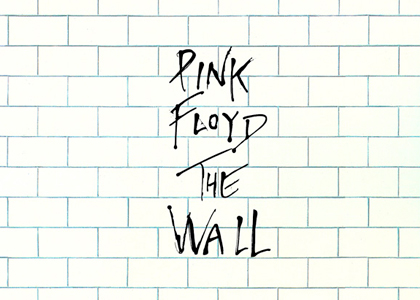

The Wall
- Lado 1 (primeiro vinil)
- N.º Título Compositor(es) Vocais principais Duração
- 1. "In the Flesh?" Waters 3:19
- 2. "The Thin Ice" Gilmour, Waters 2:27
- 3. "Another Brick in the Wall (Parte 1)" Waters 3:21
- 4. "The Happiest Days of Our Lives" Waters 1:46
- 5. "Another Brick in the Wall (Parte 2)" Gilmour, Waters 3:21
- 6. "Mother" Gilmour, Waters 5:36
- Lado 2 (primeiro vinil)
- N.º Título Compositor(es) Vocais principais Duração
- 1. "Goodbye Blue Sky" Gilmour 2:45
- 2. "Empty Spaces" Waters 2:10
- 3. "Young Lust" Gilmour, Waters Gilmour 3:25
- 4. "One of My Turns" Waters 3:35
- 5. "Don't Leave Me Now" Waters 4:16
- 6. "Another Brick in the Wall (Parte 3)" Waters 1:14
- 7. "Goodbye Cruel World" Waters 1:13
- Lado 3 (segundo vinil)
- N.º Título Compositor(es) Vocais principais Duração
- 1. "Hey You" Gilmour, Waters 4:40
- 2. "Is There Anybody Out There?" Waters 2:44
- 3. "Nobody Home" Waters 3:26
- 4. "Vera" Waters 1:35
- 5. "Bring the Boys Back Home" Waters 1:21
- 6. "Comfortably Numb" Gilmour, Waters Gilmour, Waters 6:24
- Lado 4 (segundo vinil)
- N.º Título Compositor(es) Vocais principais Duração
- 1. "The Show Must Go On" Gilmour 1:36
- 2. "In the Flesh" Waters 4:13
- 3. "Run Like Hell" Gilmour, Waters Waters 4:19
- 4. "Waiting for the Worms" Gilmour, Waters 4:04
- 5. "Stop" Waters 0:30
- 6. "The Trial" Bob Ezrin, Waters Waters 5:13
- 7. "Outside the Wall" Waters 1:41
The Wall é o décimo primeiro álbum de estúdio da banda inglesa de rock progressivo Pink Floyd. Lançado como álbum duplo em 30 de Novembro de 19791 ele foi, posteriormente, tocado ao vivo com efeitos teatrais, além de ter sidoadaptado para o cinema.
Seguindo a tendência dos últimos três álbuns de estúdio da banda, The Wall é um álbum conceitual, tratando de temas como abandono e isolamento pessoal.2 Foi concebido, inicialmente, durante a turnê In the Flesh, em 1977, quando a frustração do baixista e letrista Roger Waters para com seus espectadores tornou-se tão aguda que ele se imaginou construindo um muro entre o palco e o público.2
The Wall é uma ópera rock centrada em Pink, um personagem fictício baseado em Waters. As experiências de vida de Pink começam com a perda de seu pai durante a Segunda Guerra Mundial, e continuam com a ridicularização e o abuso de seus professores, com sua mãe superprotetora e, finalmente, com o fim de seu casamento. Tudo isso contribui para uma auto-imposta isolação da sociedade, representada por uma parede metafórica.2
O álbum contém um estilo mais duro e teatral do que os lançamentos anteriores do Pink Floyd. O tecladista Richard William Wright deixou a banda durante a produção do álbum, continuando no processo como um músico pago, apresentando-se com o grupo na turnê The Wall. Comercialmente bem-sucedido desde o seu lançamento, o álbum foi um dos mais vendidos de 1980, vendendo mais de 11.5 milhões de unidades nos Estados Unidos3 , atingindo a primeira posição da Billboard.1 A revista Rolling Stone listou The Wall na 87ª posição em sua lista dos 500 melhores álbuns de todos os tempos.